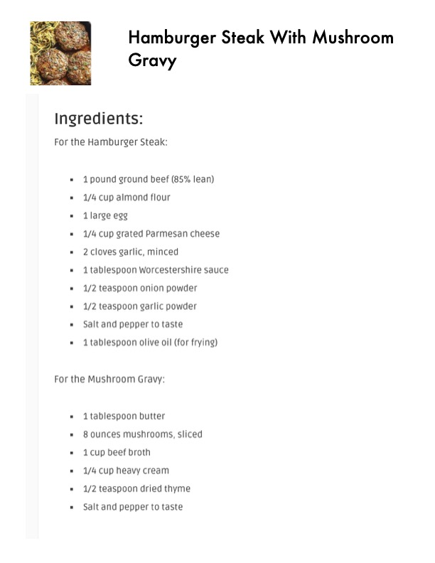

Hamburger Steak With Mushroom

Original cookbook page 525
Ingredients
- For the Hamburger Steak:
- 1pound ground beef (85% lean)
- 1/4 cup almond flour
- '1large egg
- 1/4 cup grated Parmesan cheese
- 2cloves garlic, minced
- 1tablespoon Worcestershire sauce
- 1/2 teaspoon onion powder
- 1/2 teaspoon garlic powder
- Salt and pepper to taste
- 1tablespoon olive oil (for frying)
- For the Mushroom Gravy:
- 1tablespoon butter
- 8ounNces mushrooms, sliced
- 1cup beef broth
- 1/4 cup heavy cream
- 1/2 teaspoon dried thyme
Instructions
- 1tablespoon olive oil (for frying) For the Mushroom Gravy:
- 8ounNces mushrooms, sliced » 1cup beef broth
Recipe #525 from collection